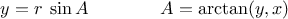
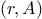

We have introduced data abstraction, a methodology for structuring
systems in such a way that much of a program can be specified
independent of the choices involved in implementing the data objects
that the program manipulates. For example, we saw in
section
2.1.1 how to separate the task of designing a
program that uses rational numbers from the task of implementing
rational numbers in terms of the computer language’s primitive
mechanisms for constructing compound data. The key idea was to erect
an abstraction barrier—in this case, the selectors and constructors
for rational numbers (
make_rat,
numer,
denom)—that
isolates the way rational numbers are used from their underlying
representation in terms of list structure. A similar abstraction
barrier isolates the details of the
functions
that perform rational
arithmetic (
add_rat,
sub_rat,
mul_rat, and
div_rat) from the “higher-level”
functions
that use rational
numbers. The resulting program has the structure shown in
figure
2.1.
These data-abstraction barriers are powerful tools for controlling
complexity. By isolating the underlying representations of data
objects, we can divide the task of designing a large program into
smaller tasks that can be performed separately. But this kind of data
abstraction is not yet powerful enough, because it may not always make
sense to speak of “the underlying representation” for a data object.
For one thing, there might be more than one useful representation for
a data object, and we might like to design systems that can deal with
multiple representations. To take a simple example, complex numbers
may be represented in two almost equivalent ways: in rectangular form
(real and imaginary parts) and in polar form (magnitude and angle).
Sometimes rectangular form is more appropriate and sometimes polar
form is more appropriate. Indeed, it is perfectly plausible to
imagine a system in which complex numbers are represented in both
ways, and in which the
functions
for manipulating complex numbers work
with either representation.
More importantly, programming systems are often designed by many
people working over extended periods of time, subject to requirements
that change over time. In such an environment, it is simply not
possible for everyone to agree in advance on choices of data
representation. So in addition to the data-abstraction barriers that
isolate representation from use, we need abstraction barriers that
isolate different design choices from each other and permit different
choices to coexist in a single program. Furthermore, since large
programs are often created by combining pre-existing modules that were
designed in isolation, we need conventions that permit programmers to
incorporate modules into larger systems
additively, that is,
without having to redesign or reimplement these modules.
In this section, we will learn how to cope with data that may be
represented in different ways by different parts of a program. This
requires constructing
generic
functions—functions
that can
operate on data that may be represented in more than one way. Our
main technique for building generic
functions
will be to work in terms
of data objects that have
type tags, that is, data objects
that include explicit information about how they are to be processed.
We will also discuss
data-directed programming, a powerful and
convenient implementation strategy for additively assembling systems
with generic operations.
We begin with the simple complex-number example. We will see how
type tags and data-directed style enable us to design separate
rectangular and polar representations for complex numbers while
maintaining the notion of an abstract “complex-number” data object.
We will accomplish this by defining arithmetic
functions
for complex
numbers (
add_complex,
sub_complex,
mul_complex, and
div_complex) in terms of generic selectors that access parts of
a complex number independent of how the number is represented. The
resulting complex-number system, as shown in
figure
2.19, contains two different kinds of
abstraction barriers. The “horizontal” abstraction barriers play
the same role as the ones in
figure
2.1. They isolate “higher-level”
operations from “lower-level” representations. In addition, there
is a “vertical” barrier that gives us the ability to separately
design and install alternative representations.

|
Figure 2.
19 Data-abstraction barriers in the complex-number system.
|
In section
2.5 we will show how to use
type tags and data-directed style to develop a generic arithmetic
package. This provides
functions
(
add,
mul, and so on)
that can be used to manipulate all sorts of “numbers” and can be
easily extended when a new kind of number is needed.
In section , we’ll show how to use generic
arithmetic in a system that performs symbolic algebra.
We will develop a system that performs arithmetic operations on
complex numbers as a simple but unrealistic example of a program that
uses generic operations. We begin by discussing two plausible
representations for complex numbers as ordered pairs: rectangular form
(real part and imaginary part) and polar form (magnitude and
angle).
1 Section
2.4.2
will show how both representations can be made to coexist in a single
system through the use of type tags and generic operations.
Like rational numbers, complex numbers are naturally represented as
ordered pairs. The set of complex numbers can be thought of as a
two-dimensional space with two orthogonal axes, the “real” axis and
the “imaginary” axis. (See figure
2.20.) From
this point of view, the complex number
(where
)
can be thought of as the point in the plane whose real coordinate is
and whose imaginary coordinate is

. Addition of complex numbers reduces in
this representation to addition of coordinates:
When multiplying complex numbers, it is more natural to think in terms
of representing a complex number in polar form, as a magnitude and an
angle (
and
in figure
2.20).
The product of two complex numbers is the vector obtained by
stretching one complex number by the length of the other and then
rotating it through the angle of the other:
Thus, there are two different representations for complex numbers,
which are appropriate for different operations. Yet, from the
viewpoint of someone writing a program that uses complex numbers, the
principle of data abstraction suggests that all the operations for
manipulating complex numbers should be available regardless of which
representation is used by the computer. For example, it is often
useful to be able to find the magnitude of a complex number that is
specified by rectangular coordinates. Similarly, it is often useful
to be able to determine the real part of a complex number that is
specified by polar coordinates.

|
Figure 2.
20 Complex numbers as points in the plane.
|
To design such a system, we can follow the same
data-abstraction
strategy we followed in designing the rational-number package in
section
2.1.1. Assume that the operations on complex numbers are
implemented in terms of four selectors:
real_part,
imag_part,
magnitude, and
angle. Also assume that
we have two
functions
for constructing complex numbers:
make_from_real_imag returns a complex number with specified real and
imaginary parts, and
make_from_mag_ang returns a complex number with
specified magnitude and angle. These
functions
have the property that,
for any complex number
z, both
make_from_real_imag(real_part(z),imag_part(z))
and
make_from_mag_ang(magnitude(z),angle(z))
produce complex numbers that are equal to
z.
Using these constructors and selectors, we can implement
arithmetic on complex numbers using the “abstract data” specified by
the constructors and selectors, just as we did for rational numbers in
section
2.1.1. As shown in the formulas above, we can add and
subtract complex numbers in terms of real and imaginary parts while
multiplying and dividing complex numbers in terms of magnitudes and
angles:
function add_complex(z1,z2) {
return make_from_real_imag(real_part(z1) + real-part(z2),
imag_part(z1) + imag_part(z2));
}
function sub_complex(z1,z2) {
return make_from_real_imag(real_part(z1) - real_part(z2),
imag_part(z1) - imag_part(z2));
}
function mul_complex(z1,z2) {
return make_from_mag_ang(magnitude(z1) * magnitude(z2),
angle(z1) + angle(z2));
}
function div_complex(z1,z2) {
return make_from_mag_ang(magnitude(z1) / magnitude(z2),
angle(z1) - angle(z2));
}
To complete the complex-number package, we must choose a
representation and we must implement the constructors and selectors in
terms of primitive numbers and primitive list structure.
There are two obvious ways to do this: We can represent a complex
number in “rectangular form” as a pair (real part, imaginary part)
or in “polar form” as a pair (magnitude, angle). Which shall we
choose?
In order to make the different choices concrete, imagine that there
are two programmers, Ben Bitdiddle and Alyssa P. Hacker, who are
independently designing representations for the complex-number system.
Ben chooses to represent complex numbers in rectangular form. With
this choice, selecting the real and imaginary parts of a complex
number is straightforward, as is constructing a complex number with
given real and imaginary parts. To find the magnitude and the angle,
or to construct a complex number with a given magnitude and angle, he
uses the trigonometric relations

which relate the real and imaginary parts (
,
) to the magnitude
and the angle
.
2 Ben’s representation is
therefore given by the following selectors and constructors:
function real_part(z) {
return head(z);
}
function imag_part(z) {
return tail(z);
}
function magnitude(z) {
return sqrt(square(real_part(z)) + square(imag_part(z)));
}
function angle(z) {
return atan(imag_part(z),real_part(z));
}
function make_from_mag_ang(r,a) {
return pair(r * cos(a), r * sin(a));
}
Alyssa, in contrast, chooses to represent complex numbers in polar
form. For her, selecting the magnitude and angle is straightforward,
but she has to use the
trigonometric relations to obtain the real and
imaginary parts. Alyssa’s representation is:
function real_part(z) {
return magnitude(z) * cos(angle(z));
}
function imag_part(z) {
return magnitude(z) * sin(angle(z));
}
function magnitude(z) {
return head(z);
}
function angle(z) {
return tail(z);
}
function make_from_real_imag(x,y) {
return pair(sqrt(square(x) + square(y)),
atan(y,x));
}
function make_from_mag_ang(r,a) {
return pair(r,a);
}
The discipline of data abstraction ensures that the same implementation of
add_complex,
sub_complex,
mul_complex, and
div_complex will work with either Ben’s representation or Alyssa’s
representation.
One way to view data abstraction is as an application of the
“principle of least commitment.” In implementing the complex-number
system in section
2.4.1, we can
use either Ben’s rectangular representation or Alyssa’s polar
representation. The abstraction barrier formed by the selectors and
constructors permits us to defer to the last possible moment the
choice of a concrete representation for our data objects and thus
retain maximum flexibility in our system design.
The principle of least commitment can be carried to even further
extremes. If we desire, we can maintain the ambiguity of
representation even after we have designed the selectors and
constructors, and elect to use both Ben’s representation and
Alyssa’s representation. If both representations are included in a
single system, however, we will need some way to distinguish data in
polar form from data in rectangular form. Otherwise, if we were
asked, for instance, to find the magnitude of the pair ,
we wouldn’t know whether to answer 5 (interpreting the number in
rectangular form) or 3 (interpreting the number in polar form). A
straightforward way to accomplish this distinction is to include a
type tag—the symbol rectangular or polar—as
part of each complex number. Then when we need to manipulate a
complex number we can use the tag to decide which selector to apply.
In order to manipulate tagged data,
we will assume that we have
functions
type_tag and
contents that extract from a data object the tag and the actual
contents (the polar or rectangular coordinates, in the case of a
complex number). We will also postulate a
function
attach_tag that takes a tag and contents and produces a tagged data
object. A straightforward way to implement this is to use ordinary
list structure:
function attach_tag(type_tag,contents) {
return pair(type_tag,contents);
}
function type_tag(datum) {
if (is_pair(datum))
return head(datum);
else return error("bad tagged datum -- type_tag",datum);
}
function contents(datum) {
if (is_pair(datum))
return tail(datum);
else return error("bad tagged datum -- contents",datum);
}
Using these
functions, we can define predicates
is_rectangular
and
is_polar, which recognize polar and rectangular numbers,
respectively:
function is_rectangular(z) {
return type_tag(z) === "rectangular";
}
function is_polar(z) {
return type_tag(z) === "polar";
With type tags, Ben and Alyssa can now modify their code so that
their two different representations can coexist in the same system.
Whenever Ben constructs a complex number, he tags it as rectangular.
Whenever Alyssa constructs a complex number, she tags it as polar.
In addition, Ben and Alyssa must make sure that the names of their
functions
do not conflict. One way to do this is for Ben to append
the suffix
rectangular to the name of each of his representation
functions
and for Alyssa to append
polar to the names of hers.
Here is Ben’s revised rectangular representation from
section
2.4.1:
function real_part_rectangular(z) {
return head(z);
}
function imag_part_rectangular(z) {
return tail(z);
}
function magnitude_rectangular(z) {
return sqrt(square(real_part_rectangular(z))
+
square(imag_part_rectangular(z)));
}
function angle_rectangular(z) {
return atan(imag_part_rectangular(z),
real_part_rectangular(z));
}
function make_from_real_imag_rectangular(x, y) {
return attach_tag("rectangular",
pair(x, y));
}
function make_from_mag_ang_rectangular(r, a) {
return attach_tag("rectangular",
pair(r * cos(a), r * sin(a)));
}
and here is Alyssa’s revised polar representation:
function real_part_polar(z) {
return magnitude_polar(z) * cos(angle_polar(z));
}
function imag_part_polar(z) {
return magnitude_polar(z) * sin(angle_polar(z));
}
function magnitude_polar(z) {
return head(z);
}
function angle_polar(z) {
return tail(z);
}
function make_from_real_imag_polar(x,y) {
return attach_tag("polar",
pair(sqrt(square(x) + square(y)),
atan(y,z)));
}
function make_from_mag_ang_polar(r,a) {
return attach_tag("polar",
pair(r,a));
}
Each generic selector is implemented as a
function
that checks the
tag of its argument and calls the appropriate
function
for handling
data of that type. For example, to obtain the real part of a complex
number,
real_part examines the tag to determine whether to use
Ben’s
real_part_rectangular or Alyssa’s
real_part_polar.
In either case, we use
contents to extract the bare, untagged
datum and send this to the rectangular or polar
function
as required:
function real_part(z) {
if (is_rectangular(z))
return real_part_rectangular(contents(z));
else if (is_polar(z))
return real_part_polar(contents(z));
else
return error("Unknown type -- real_part",z);
}
function imag_part(z) {
if (is_rectangular(z))
return imag_part_rectangular(contents(z));
else if (is_polar(z))
return imag_part_polar(contents(z));
else
return error("Unknown type -- imag_part",z);
}
function magnitude(z) {
if (is_rectangular(z))
return magnitude_rectangular(contents(z));
else if (is_polar(z))
return magnitude_polar(contents(z));
else
return error("Unknown type -- magnitude",z);
}
function angle(z) {
if (is_rectangular(z))
return angle_rectangular(contents(z));
else if (is_polar(z))
return angle_polar(contents(z));
else
return error("Unknown type -- angle",z);
}
To implement the complex-number arithmetic operations, we can use the
same
functions
add_complex,
sub_complex,
mul_complex, and
div_complex from
section
2.4.1, because the
selectors they call are generic, and so will work with either
representation. For example, the
function
add_complex is still
function add_complex(z1,z2) {
return make_from_real_imag(real_part(z1) + real-part(z2),
imag_part(z1) + imag_part(z2));
}
Finally, we must choose whether to construct complex numbers using
Ben’s representation or Alyssa’s representation. One reasonable
choice is to construct rectangular numbers whenever we have real and
imaginary parts and to construct polar numbers whenever we have
magnitudes and angles:
function make_from_real_imag(x,y) {
return make_from_real_imag_rectangular(x,y);
}
function make_from_mag_ang(r,a) {
return make_from_mag_ang_polar(r,a);
}

|
Figure 2.
21 Structure of the generic complex-arithmetic system.
|
The resulting complex-number system has the structure shown in
figure
2.21. The system has been
decomposed into three relatively independent parts: the
complex-number-arithmetic operations, Alyssa’s polar
implementation, and Ben’s rectangular implementation. The polar and
rectangular implementations could have been written by Ben and Alyssa
working separately, and both of these can be used as underlying
representations by a third programmer implementing the
complex-arithmetic
functions
in terms of the abstract
constructor/selector interface.
Since each data object is tagged with its type, the selectors operate
on the data in a generic manner. That is, each selector is defined to
have a behavior that depends upon the particular type of data it is
applied to. Notice the general mechanism for interfacing the separate
representations: Within a given representation implementation (say,
Alyssa’s polar package) a complex number is an untyped pair
(magnitude, angle). When a generic selector operates on a number of
polar type, it strips off the tag and passes the contents on to
Alyssa’s code. Conversely, when Alyssa constructs a number for general
use, she tags it with a type so that it can be appropriately
recognized by the higher-level
functions. This discipline of
stripping off and attaching tags as data objects are passed from level
to level can be an important organizational strategy, as we shall see
in section
2.5.
The general strategy of checking the type of a datum and calling an
appropriate
function
is called
dispatching on type. This is a
powerful strategy for obtaining modularity in system design. On
the other hand, implementing the dispatch as in
section
2.4.2 has two significant weaknesses. One
weakness is that the generic interface
functions
(
real_part,
imag_part,
magnitude, and
angle) must know about all
the different representations. For instance, suppose we wanted to
incorporate a new representation for complex numbers into our
complex-number system. We would need to identify this new
representation with a type, and then add a clause to each of the
generic interface
functions
to check for the new type and apply the
appropriate selector for that representation.
Another weakness of the technique is that even though the individual
representations can be designed separately, we must guarantee that
no two
functions
in the entire system have the same name. This is
why Ben and Alyssa had to change the names of their original
functions
from section
2.4.1.
The issue underlying both of these weaknesses is that the technique
for implementing generic interfaces is not additive. The person
implementing the generic selector
functions
must modify those
functions
each time a new representation is installed, and the people
interfacing the individual representations must modify their
code to avoid name conflicts. In each of these cases, the changes
that must be made to the code are straightforward, but they must be
made nonetheless, and this is a source of inconvenience and error.
This is not much of a problem for the complex-number system as it
stands, but suppose there were not two but hundreds of different
representations for complex numbers. And suppose that there were many
generic selectors to be maintained in the abstract-data interface.
Suppose, in fact, that no one programmer knew all the interface
functions
or all the representations. The problem is real and must
be addressed in such programs as large-scale data-base-management
systems.
What we need is a means for modularizing the system design even
further. This is provided by the programming technique known as
data-directed programming. To understand how data-directed
programming works, begin with the observation that whenever we deal
with a set of generic operations that are common to a set of
different types we are, in effect, dealing with a two-dimensional
table that contains the possible operations on one axis and the
possible types on the other axis. The entries in the table are the
functions
that implement each operation for each type of argument
presented. In the complex-number system developed in the previous
section, the correspondence between operation name, data type, and
actual
function
was spread out among the various conditional clauses
in the generic interface
functions. But the same information could
have been organized in a table, as shown in
figure
2.22.
Data-directed programming is the technique of designing programs to
work with such a table directly. Previously, we implemented the
mechanism that interfaces the complex-arithmetic code with the two
representation packages as a set of
functions
that each perform an
explicit dispatch on type. Here we will implement the interface as a single
function
that looks up the combination of the operation name and
argument type in
the table to find the correct
function
to apply, and then applies it
to the contents of the argument. If we do this, then to add a new
representation package to the system we need not change any existing
functions; we need only add new entries to the table.
|
|
Figure 2.
22 Table of operations for the complex-number system.
|
To implement this plan, assume that we have two
functions,
put and
get, for manipulating the
operation-and-type table:
-
put()
installs the  in the table, indexed by the
and the
.
in the table, indexed by the
and the
.
-
get()
looks up the
,
entry in the table
and returns the item found there. If no item is found, get
returns false.
For now, we can assume that
put and
get are
included in our language. In chapter 3 (section )
we will see how to implement these and
other operations for manipulating tables.
Here is how data-directed programming can be used in the
complex-number system. Ben, who developed the rectangular
representation, implements his code just as he did originally. He defines a collection of
functions, or a
package, and interfaces
these to the rest of the system by adding entries to the table that
tell the system how to operate on rectangular numbers.
This is accomplished by calling the following
function:
function install_rectangular_package() {
function real_part(z) { return head(z); }
function imag_part(z) { return tail(z); }
function make_from_real_imag(x,y) { return pair(x,y); }
function magnitude(z) {
return sqrt(square(real_part(z)) +
square(imag_part(z)));
}
function angle(z) {
return atan(imag_part(z),real_part(z));
}
function make_from_mag_ang(r,a) {
return pair(r * cos(a), r * sin(a));
}
// interface to the rest of the system
function tag(x) {
return attach_tag("rectangular",x);
}
put("real_part", list("rectangular"), real_part);
put("imag_part", list("rectangular"), imag_part);
put("magnitude", list("rectangular"), magnitude);
put("angle", list("rectangular"), angle);
put("make_from_real_imag", "rectangular",
function(x,y) { return tag(make_from_real_imag(x,y)); });
put("make_from_mag_ang", "rectangular",
function(r,a) { return tag(make_from_mag_ang(r,a)); });
return "done";
}
Notice that the internal
functions
here are the same
functions
from
section
2.4.1 that Ben wrote when
he was working in isolation. No changes are necessary in order to
interface them to the rest of the system. Moreover, since these
function
definitions are internal to the installation
function, Ben
needn’t worry about name conflicts with other
functions
outside the
rectangular package. To interface these to the rest of the system,
Ben installs his
real_part
function
under the operation name
real_part and the type
list("rectangular"), and similarly
for the other selectors.
3 The interface also defines
the constructors to be used by the external system.
4
These are
identical to Ben’s internally defined constructors, except that they
attach the tag.
Alyssa’s polar package is analogous:
function install_polar_package() {
// internal functions
function magnitude(z) { return head(z); }
function angle(z) { return tail(z); }
function make_from_mag_ang(r,a) { return pair(r,a); }
function real_part(z) {
return magnitude(z) * cos(angle(z));
}
function imag_part(z) {
return magnitude(z) * sin(angle(z));
}
function make_from_real_imag(x,y) {
return pair(sqrt(square(x) + square(y)),
atan(y,x));
}
// interface to teh rest of the system
function tag(x) { return attach_tag("polar",x); }
put("real_part",list("polar"),real_part);
put("imag_part",list("polar"),imag_part);
put("magnitude",list("polar"),magnitude);
put("angle",list("polar"),angle);
put("make_from_real_imag", "polar",
function(x,y) { return tag(make_from_real_imag(x,y)); });
put("make_from_mag_ang", "polar",
function(r,a) { return tag(make_from_mag_ang(r,a)); });
}
Even though Ben and Alyssa both still use their original
functions
defined with the same names as each other’s (e.g.,
real_part), these
definitions are now internal to different
functions
(see
section
1.1.8), so there is no name
conflict.
The complex-arithmetic selectors access the table by means of a
general “operation”
function
called
apply_generic, which
applies a generic operation to some arguments. The function
apply_generic
looks in the table under the name of the operation and the types of the
arguments and applies the resulting
function
if one is present:
5
function apply_generic(op,args) {
var type_tags = map(type_tag,args);
var fun = get(op,type_tags);
if (fun != false)
return fun(map(contents,args));
else
return error("No method for these types -- apply_generic",
list(op,type_tags));
}
Using
apply_generic, we can define our generic selectors as follows:
function real_part(z) {
return apply_generic("real_part",list(z));
}
function imag_part(z) {
return apply_generic("imag_part",list(z));
}
function magnitude(z) {
return apply_generic("magnitude",list(z));
}
function angle(z) {
return apply_generic("angle",list(z));
}
Observe that these do not change at all if a new representation is
added to the system.
We can also extract from the table the
constructors to be used by the programs external to the packages in
making complex numbers from real and imaginary parts and from
magnitudes and angles.
As in section
2.4.2, we
construct rectangular numbers whenever we have real and
imaginary parts, and polar numbers whenever we have magnitudes and angles:
function make_from_real_imag(x,y) {
return get("make_from_real_imag","rectangular")(x,y);
}
function make_from_mag_ang(r,a) {
return get("make_from_mag_ang","polar")(r,a);
}
Exercise 2.76.
Section
2.3.2 described a program that
performs symbolic differentiation:
function deriv(exp,var) {
if (is_number(exp))
return 0;
else if (is_variable(exp))
return (is_same_variable(exp,var)) ? 1 : 0;
else if (is_sum(exp))
return make_sum(deriv(addend(exp),var),
deriv(augend(exp),var));
else if (is_product(exp))
return make_sum(make_product(multiplier(exp),
deriv(multiplicand(exp),variable)),
make_product(deriv(multiplier(exp),variable),
multiplicand(exp)));
// more rules can be added here
else
return error("unknown expression type -- deriv",exp);
}
We can regard this program as performing a dispatch on the type of the
expression to be differentiated. In this situation the “type tag” of the
datum is the algebraic operator symbol (such as
) and the
operation being performed is
deriv. We can transform this
program into data-directed style by rewriting the basic derivative
function
as
function deriv(exp,var) {
if (is_number(exp))
return 0;
else if (is_variable(exp))
return (is_same_variable(exp,var)) ? 1 : 0;
else
return get("deriv",operator(exp))(operands(exp),var);
}
function operator(exp) {
return head(exp);
}
function operands(exp) {
return tail(exp);
}
-
Explain what was done above.
Why can’t we assimilate the predicates is_number and is_same_variable into the data-directed dispatch?
-
Write the
functions
for derivatives of sums and products, and the
auxiliary code required to install them in the table used by the
program above.
-
Choose any additional differentiation rule that you like, such as
the one for exponents (exercise 2.59),
and install it in this data-directed system.
-
In this simple algebraic manipulator the type of an expression is
the algebraic operator that binds it together. Suppose, however, we
indexed the
functions
in the opposite way, so that the dispatch line
in deriv looked like
get(operator(exp),"deriv")(operands(exp),var)
What corresponding changes to the derivative system are required?
Exercise 2.77.
Insatiable Enterprises, Inc., is a highly decentralized conglomerate
company consisting of a large number of independent divisions located
all over the world. The company’s computer facilities have just been
interconnected by means of a clever network-interfacing scheme that
makes the entire network appear to any user to be a single computer.
Insatiable’s president, in her first attempt to exploit the ability of
the network to extract administrative information from division files,
is dismayed to discover that, although all the division files have
been implemented as data structures in Scheme, the particular data
structure used varies from division to division. A meeting of
division managers is hastily called to search for a strategy to
integrate the files that will satisfy headquarters’ needs while
preserving the existing autonomy of the divisions.
Show how such a strategy can be implemented with data-directed
programming. As an example, suppose that each division’s personnel
records consist of a single file, which contains a set of records
keyed on employees’ names. The structure of the set varies from
division to division. Furthermore, each employee’s record is itself a
set (structured differently from division to division) that contains
information keyed under identifiers such as
address and
salary. In particular:
-
Implement for headquarters a get_record
function
that
retrieves a specified employee’s record from a specified personnel
file. The
function
should be applicable to any division’s file.
Explain how the individual divisions’ files should be structured. In
particular, what type information must be supplied?
-
Implement for headquarters a get_salary
function
that
returns the salary information from a given employee’s record from any
division’s personnel file. How should the record be structured in
order to make this operation work?
-
Implement for headquarters a find_employee_record
function.
This should search all the divisions’ files for the record of a given
employee and return the record. Assume that this
function
takes as
arguments an employee’s name and a list of all the divisions’ files.
-
When Insatiable takes over a new company, what changes must
be made in order to incorporate the new personnel information into the
central system?
Message passing
The key idea of data-directed programming is to handle generic
operations in programs by dealing explicitly with operation-and-type
tables, such as the table in figure
2.22. The
style of programming we used in section
2.4.2
organized the required dispatching on type by having each operation
take care of its own dispatching. In effect, this decomposes the
operation-and-type table into rows, with each generic operation
function
representing a row of the table.
An alternative implementation strategy is to decompose the table into
columns and, instead of using “intelligent operations” that dispatch
on data types, to work with “intelligent data objects” that dispatch
on operation names. We can do this by arranging things so that a data
object, such as a rectangular number, is represented as a
function
that takes as input the required operation name and performs the
operation indicated. In such a discipline,
make_from_real_imag
could be written as
function make_from_real_imag(x,y) {
function dispatch(op) {
if (op === "real_part")
return x;
else if (op === "imag_part")
return y;
else if (op === "magnitude")
return sqrt(square(x) + square(y));
else if (op === "angle")
return atan(y,x);
else
return error("Unknown op -- make_from_real_imag",op);
}
return dispatch;
}
The corresponding
apply_generic
function, which applies a
generic operation to an argument, now simply feeds the operation’s
name to the data object and lets the object do the work:
6
function apply_generic(op,arg) {
return head(arg)(op);
}
Note that the value returned by
make_from_real_imag is a
function—the internal
dispatch
function. This is the
function
that is invoked when
apply_generic requests an operation to
be performed.
This style of programming is called
message passing. The name
comes from the image that a data object is an entity that receives the
requested operation name as a “message.” We have already seen an
example of message passing in section
2.1.3, where we saw
how
pair,
head, and
tail could be defined with no data
objects but only
functions. Here we see that message passing is not
a mathematical trick but a useful technique for organizing systems
with generic operations. In the remainder of this chapter we will
continue to use data-directed programming, rather than message
passing, to discuss generic arithmetic operations. In chapter 3 we
will return to message passing, and we will see that it can be a
powerful tool for structuring simulation programs.
Exercise 2.78.
Implement the constructor make-from-mag-ang in message-passing style.
This
function
should be analogous to the make_from_real_imag
function
given above.
Exercise 2.79.
As a large system with generic operations evolves, new types of data
objects or new operations may be needed. For each of the three
strategies—generic operations with explicit dispatch, data-directed
style, and message-passing-style—describe the changes that must be
made to a system in order to add new types or new operations. Which
organization would be most appropriate for a system in which new types
must often be added? Which would be most appropriate for a system in
which new operations must often be added?